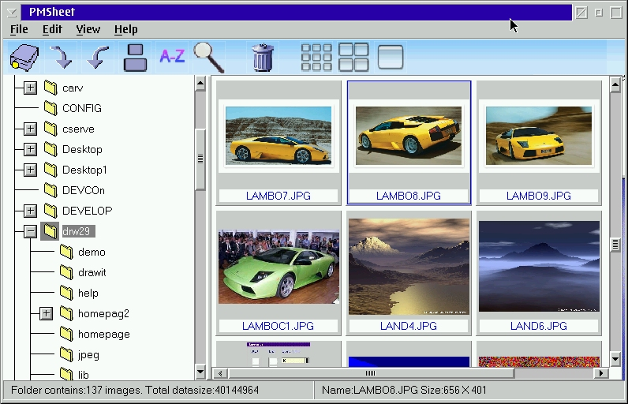

PMSHEET version 2.1 for OS/2 Warp
Date : 27 - February - 2008
Author : Jasper de Keijzer
Contents
PMSheet in generalSupported formats
Selections
Keyboard
Slide Show
Rotating
Zoom
Sort on size
Sort on Name
Screen shot
This version
DowLoad PMSHEET
NEW !! DowLoad source code
PMSheet in general
PMSHEET is a file explorer like program, showing at the left a
directory
tree and at the right the images in the selected directory. The images
are shown as thumbnails. The size of the thumbnails can be varied in
three
different sizes, small, medium and large. A very important property of
the program is that almost any action can be done by the keyboard
thereby
minimizing the dependancy of the mouse. Each thumbnail uses a maximum
of
10 kb. The program support the standard drag & drop of OS/2 Warp,
even
the tree at the right accepts dropped files. This makes it easy to
maintain
your image folders. On the images simple functions can be applied like
rotating, zooming and slideshow of sellected images etc. The program
comes with online help. Last but not least, it is freeware.
Supported formats
| Format | Description |
| GIF | Compuserve Interchange format |
| JPEG | Join Photo Expert Group |
| TIFF | Tagged Imgae File Format |
| BMP | OS/2 & Windows |
| TGA | True Vision Targa |
| PCX | PintBrush |
Selections
Selecting images can be done by using the cursor keys. By holding down the <SHIFT> key, mulitple selections can be done of adjacent images. By using the <CTRL> key and the mouse an arbitrary set of images can be selected. Most, if not all, functions of PMSheet act on the selected images.Keyboard
| Key | Action |
| Shift | With the shift key and the cursor keys it is possible to make multiple selections. Together with the mouse it is also possible to make mulitple selections |
| Ctrl | The same as with the Shift key. Only with this key it possible to make a mulitple selection with the mouse whereby the selected images are not adjacent. |
| Enter | On a single selected image, it shows the detailed view. |
| Esc | Bring the program back in its initial state. Stops a slide show or unzoom's the current image. |
| F3 | Closes the program. |
| Delete | Deletes the selected images. Same can be achieved by pressing the waste basket button in the toolbar or by dragging the selected images to the OS/2 shredder. |
| Home | Sets the selection to the first image in the thumbnail view.
When needed
it will be scrolled in view. Can be used in combination with the Shift key. |
| End | Sets the selection on the last image in the folder. As home key. |
Slide show
The slideshow buttons starts up a slideshow of the selected images. The time, at least in this version, between the showed images is four seconds. When large images need to be loaded on a slow machine this time may be longer.
Rotating
Images can be rotated clockwise and counter clockwise 90 degrees. PMSheet loads the images, and writes them back to disk rotated. Be aware that the quality of JPEG images may suffer from this.
Zoom

Shows a single selected images as detail.
Sort on size
Sorts the images in the selected folder on size. Does not work on a selection.
Sort on name
Sorts the images in the selected folder on name. Does not work on a selection.
Screen shot

In this version
This version is highly optimized. Shows upfront the amount of pictures to be loaded, by showing the name and a man at work. The yellow background in the small picture is an idea of Tim, my little son.Translate PMSHEET into your own language
The following zip file contains all the necessary bits and pieces to make a pmsheet version in your own language. You can even change the bitmaps on the toolbar.- Unzip the zipfile in a clean directory.
- Copy pmsheet.exe into the directory containing the PMSHEET.RC file.
- Translate the quoted strings and menu strings into your language
- Change bitmaps and icons if you like.
- issue the following command on the command line: rc pmsheet.rc
- Run pmsheet.exe and see results. Fix errors and repeat 5
- Translate the pmsheet.ipf into your language
- Compile helpfile with the ipf compiler. ipf pmsheet.ipf
- Run pmsheet and see the results.
- Bundle pmsheet.exe plus the new pmsheet.hlp into one zip file and
release it (AS FREEWARE!)
- Mail me a link to your pmsheet page with screenshot of the
translated version. I will add this link to this page.
- Thanks for your effort.
Download PMSHEET
| English version | by Jasper de Keijzer |
|
| German
version |
GMPMSHT.ZIP | by Andreas Kohl |
| Dutch version ( Nederlands ) | by Kris Steenhaut Has NOT been verified by Jasper de Keijzer due to system problems. |
|
| Source code of pmsheet | To build your own pmsheet or to use in your own projects |
Copyright statement for the source code.
The source code may be used in any software project, commercial and non commercial. The usage is free of charge. Requested but not required is a statement in the about of the developed program which says where the software is based upon. Something like, based on pmsheet sources by J.de Keijzer. Like you can see in the help of pmsheet, here I explictly thank the developers of the jpeg library and the developer of the open bitmap reader sources.